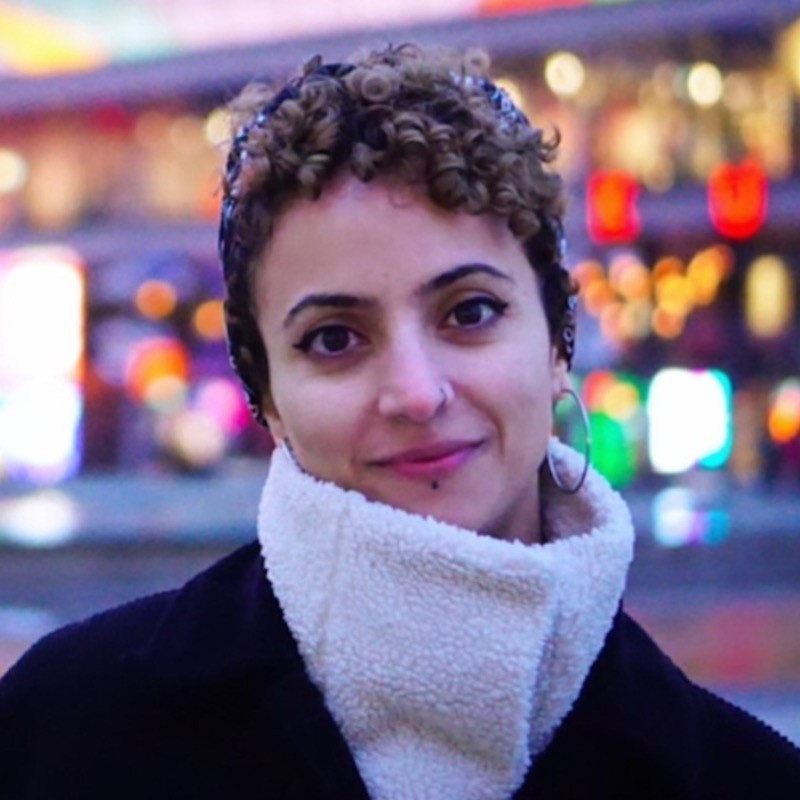

People, planet & systems · Sustainability
"Curious enough to understand.
Driven enough to contribute."
I listen, observe and find the best way to improve a system. I care deeply about people and the planet; and when I believe in something, I find a way to make it happen. Currently at Inter IKEA Group, completing an MSc at Stockholm University.

Who I am
Curiosity has always led the way. It started all the way back when I was a little kid in Yemen and from there it took me everywhere. Being curious, new and willing to figure things out took me on a journey to multiple countries where I experienced the UN, the Danish Refugee Council, the Stockholm Environment Institute and now Inter IKEA Group, alongside degrees from four universities across four countries. Every experience has taught me something different and something real about how people organise in different contexts and how organisations operate; what brings people together and what drives them apart. It showed me where coordination breaks down, and where communication leads the way; and how people, not systems, are always at the centre of any real solution.
Impact at a glance
Career
Competencies
Research & Projects
GIS-based study of how ecological and recreational greenspace in Copenhagen intersects with income distribution and urban environmental equity. Introduces a "floor and ceiling" framework to evaluate minimum and maximum greenspace thresholds across neighbourhoods, showing that the presence of greenspace does not automatically translate into equitable environmental benefit.
National survey of 199 researchers analysing the impact of Swedish government funding cuts. Co-designed, led data collection, analysis and report production for SweDev.
Applying systems thinking and theory of change to policy development in high-risk environments — and why Mine Action strategy must integrate climate adaptation.
Led a 5-person team evaluating 10 irrigation suppliers across East Africa. Identified solar drip as the only financially viable low-yield solution for smallholder farmers.
Co-founded a cultural complex combining a reading centre, education hub and bookstore in Yemen. Developed as a business project within the YLDF Youth Entrepreneurs programme, a UNICEF-partnered initiative countering extremism through youth economic empowerment in conflict-affected areas.
Academic Background
Professional Development
Testimonials
She impressed me with her to do attitude and professionalism. She is kind, dependable and multitalented — analytical skills, information management, political acumen and much more. A very impressive young woman with a bright future ahead of her.
She brought a consistently positive attitude and was always keen to try new things. Curious and eager to learn, Amani took on tasks with enthusiasm and an open mind. Her excellent English and communication skills were a real asset to the team.
Amani did exceptionally well in every aspect of the role. Service-minded, professional, independent and always positive. Great commitment and always a smile on her face. I would highly recommend her.
She has the natural charisma that makes other people comfortable around her. Amani is an individual who has high spirit, always supportive to her colleagues and always looking to contribute more to the organisation.
The full picture
These are not the roles that define my career path, but they are the ones that shaped who I am. Every one of them taught me something I still carry.